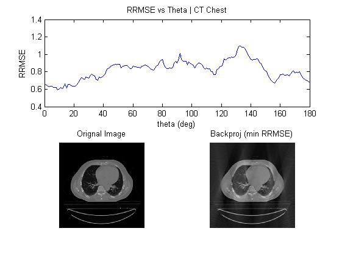
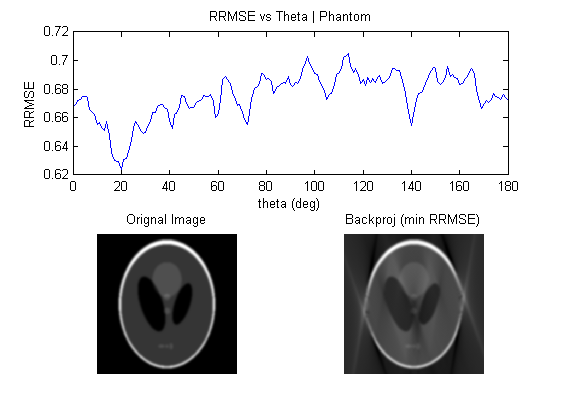

Q3.
Contents
Load data
chest = load('../data/CT_Chest.mat');
chest_img = mat2gray(chest.imageAC);
phantom = load('../data/myPhantom.mat');
phantom_img = mat2gray(phantom.imageAC);
range = 150;
CT_Chest
RRMSE_vals = zeros(1,181);
radon_chest = radon(chest_img,0:180);
for theta = 0:180
ind = sort(mod((0:150)+theta,181)+1);
radon_trans150 = radon_chest(:,ind);
backProj = mat2gray(iradon(radon_trans150, ind-1,'linear','Ram-Lak',1,size(chest_img,1)));
RRMSE_vals(theta+1) = sqrt(sum((chest_img(:)-backProj(:)).^2)/sum((chest_img(:).^2)));
end
[~,index] = min(RRMSE_vals);
ind = sort(mod((0:150)+(index-1),181)+1);
radon_trans_min = radon_chest(:,ind);
minbackProj = mat2gray(iradon(radon_trans_min, ind-1,'linear','Ram-Lak',1,size(chest_img,1)));
figure
subplot(2,2,1:2)
plot(0:180,RRMSE_vals);
title('RRMSE vs Theta | CT Chest')
xlabel('theta (deg)');
ylabel('RRMSE');
subplot(2,2,4)
imshow(minbackProj)
title('Backproj (min RRMSE)')
subplot(2,2,3);
imshow(chest_img);
title('Orignal Image');

- Minimum Occurs at theta =

Phantom Image
RRMSE_vals = zeros(1,181);
radon_phantom = radon(phantom_img,0:180);
for theta = 0:180
ind = sort(mod((0:150)+theta,181)+1);
radon_trans150 = radon_phantom(:,ind);
backProj = mat2gray(iradon(radon_trans150, ind-1,'linear','Ram-Lak',1,size(phantom_img,1)));
RRMSE_vals(theta+1) = sqrt(sum((phantom_img(:)-backProj(:)).^2)/sum((phantom_img(:).^2)));
end
[val,index1] = min(RRMSE_vals);
ind = sort(mod((0:150)+(index1-1),181)+1);
radon_trans_min = radon_phantom(:,ind);
minbackProj = mat2gray(iradon(radon_trans_min, ind-1,'linear','Ram-Lak',1,size(phantom_img,1)));
figure
subplot(2,2,1:2)
plot(0:180,RRMSE_vals);
title('RRMSE vs Theta | Phantom')
xlabel('theta (deg)');
ylabel('RRMSE');
subplot(2,2,4)
imshow(minbackProj)
title('Backproj (min RRMSE)')
subplot(2,2,3);
imshow(phantom_img);
title('Orignal Image');

- Minimum Occurs at theta =
- The CT-scan data is aquired only for 150 deg of contiguos angle values which brings in error.For minimum error we want to take the direction/theta which capture maximum information/variation from the image.We know that 1D fft of the forward projection at a particular angle is same as the 2D fft of orignal image in that direction.So by looking at the 2D fft of original image,we can select theta to remove the angular section with least energy in fft which contains least information.